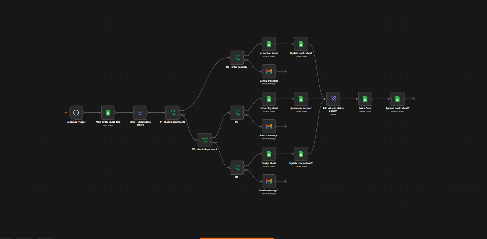
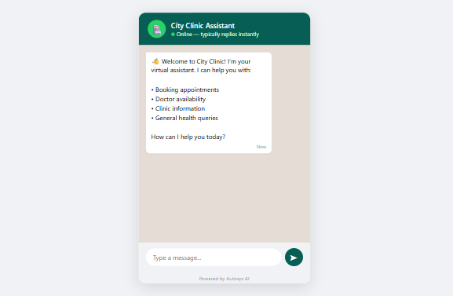

01 / AI AGENTS
AI Chatbots
Customer-facing AI agents for websites and WhatsApp that answer questions, collect information and handle repetitive conversations.
Examples: patient queries · FAQs · lead qualification · booking flowsAutosyss builds practical AI chatbots, custom business workflows and order/process automations that help small businesses and startups do more with less manual work.
I’m an AI automation developer focused on helping small businesses and startups reduce repetitive work and create smoother business processes.
I believe many businesses spend too much time on tasks that can be handled automatically. I started Autosyss to build practical systems that connect everyday tools, APIs and AI into workflows that actually solve those problems.
Right now, my portfolio includes working demo projects in operations and healthcare, including an automated order-routing system and a medical AI appointment assistant.
The goal is not to add more software. It is to remove repetitive work, connect the tools you already use, and create a smoother process.
Customer-facing AI agents for websites and WhatsApp that answer questions, collect information and handle repetitive conversations.
Examples: patient queries · FAQs · lead qualification · booking flowsConnect forms, sheets, email, databases and AI so information moves automatically from one step to the next.
Examples: approvals · notifications · data handling · internal processesAutomate repetitive operational tasks that normally require multiple people to read, sort, copy, route or update information.
Examples: order routing · reporting
Business Process Automation — Automated workflow for detecting new orders,routing to departments, and sending notifications

An AI assistant that answers patient questions and handles appointment booking. Designed for deployment through a clinic website or WhatsApp.
The order-routing system was designed to automate the work that involved 2-3 people. The figure is a demo estimate based on the workflow, not a live client result.
I first look at where information is being copied, checked, sorted, emailed or handed off. Then I design the smallest practical system that can remove those steps using n8n, AI and the tools your business already depends on.
A straightforward approach for small businesses and startups that want useful automation without a giant implementation project.
Find the repetitive steps, handoffs, delays and manual data entry that are worth automating.
Connect the right apps, APIs and AI logic in n8n and design the automation around the real process.
Run real scenarios, handle edge cases and refine the workflow before it becomes part of daily operations.
Tell me what your team currently does manually. We can identify what is worth automating, what should stay human, and what a practical first workflow could look like.